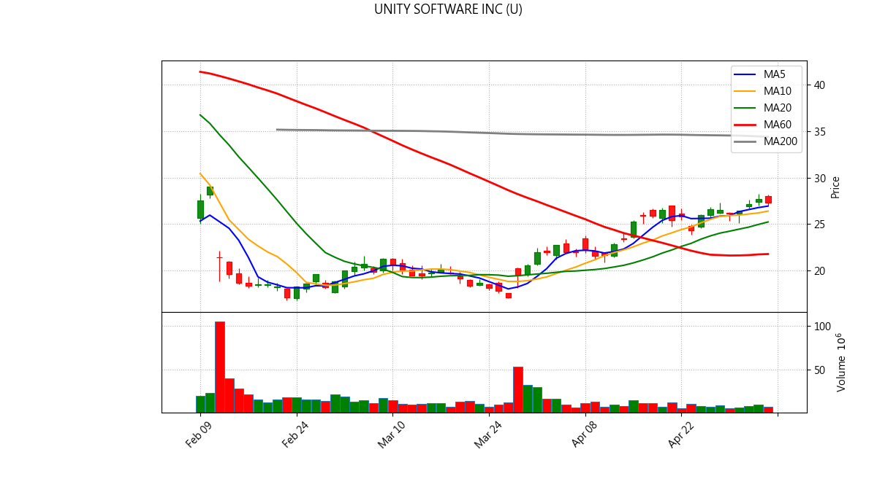
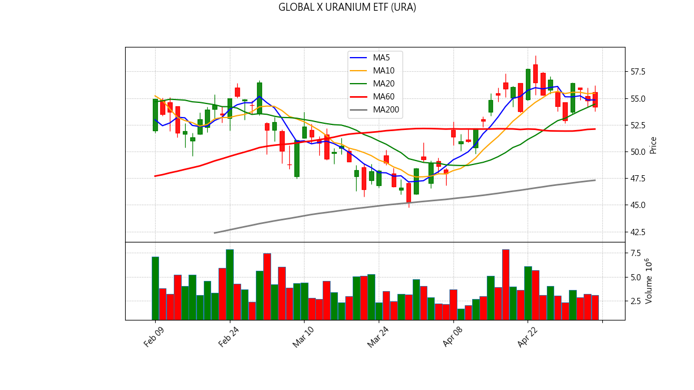

📊 NYSE/US Stock Inventory AI Diagnosis
Generated at: 2026-05-06 20:21:22
ASTERA LABS INC (ALAB)
Current Price: $215.69
💼 Portfolio Status
Avg Cost: $190.72
Quantity: 15
Unrealized P/L: $374.55
Return Rate: 13.09%
📋 Analysis Signals
✅ No major sell signals triggered.

✨ AI Comprehensive Diagnosis
ADVANCED MICRO DEVICES (AMD)
Current Price: $355.26
💼 Portfolio Status
Avg Cost: $242.94
Quantity: 9
Unrealized P/L: $1,010.86
Return Rate: 46.23%
📋 Analysis Signals
✅ No major sell signals triggered.

✨ AI Comprehensive Diagnosis
BROADCOM LTD (AVGO)
Current Price: $427.36
💼 Portfolio Status
Avg Cost: $368.95
Quantity: 4
Unrealized P/L: $233.64
Return Rate: 15.83%
📋 Analysis Signals
✅ No major sell signals triggered.

✨ AI Comprehensive Diagnosis
ALPHABET INC-CL C (GOOG)
Current Price: $384.27
💼 Portfolio Status
Avg Cost: $329.63
Quantity: 16
Unrealized P/L: $874.18
Return Rate: 16.57%
📋 Analysis Signals
✅ No major sell signals triggered.

✨ AI Comprehensive Diagnosis
MARVELL TECHNOLOGY INC (MRVL)
Current Price: $168.75
💼 Portfolio Status
Avg Cost: $125.39
Quantity: 25
Unrealized P/L: $1,084.09
Return Rate: 34.58%
📋 Analysis Signals
✅ No major sell signals triggered.

MICRON TECHNOLOGY INC (MU)
Current Price: $640.20
💼 Portfolio Status
Avg Cost: $411.13
Quantity: 7
Unrealized P/L: $1,603.48
Return Rate: 55.72%
📋 Analysis Signals
✅ No major sell signals triggered.

NVIDIA CORP (NVDA)
Current Price: $196.50
💼 Portfolio Status
Avg Cost: $182.78
Quantity: 33
Unrealized P/L: $452.79
Return Rate: 7.51%
📋 Analysis Signals
⚠️ 【Break below 5MA】Short-term weakness.
🚨 【Break below 10MA】Trend broken, consider exit.

✨ AI Comprehensive Diagnosis
TESLA INC (TSLA)
Current Price: $389.37
💼 Portfolio Status
Avg Cost: $375.20
Quantity: 8
Unrealized P/L: $113.34
Return Rate: 3.78%
📋 Analysis Signals
✅ No major sell signals triggered.

✨ AI Comprehensive Diagnosis
UNITY SOFTWARE INC (U)
Current Price: $27.34
💼 Portfolio Status
Avg Cost: $25.92
Quantity: 100
Unrealized P/L: $141.62
Return Rate: 5.46%
📋 Analysis Signals
✅ No major sell signals triggered.

✨ AI Comprehensive Diagnosis
GLOBAL X URANIUM ETF (URA)
Current Price: $54.20
💼 Portfolio Status
Avg Cost: $55.56
Quantity: 36
Unrealized P/L: $-48.90
Return Rate: -2.44%
📋 Analysis Signals
⚠️ 【Break below 5MA】Short-term weakness.
🚨 【Break below 10MA】Trend broken, consider exit.
